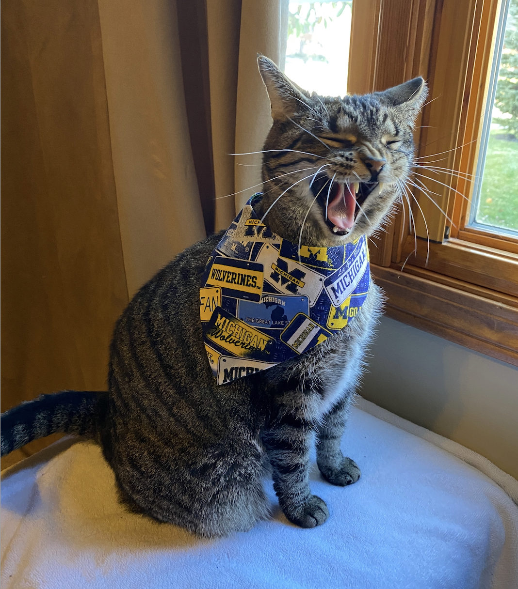
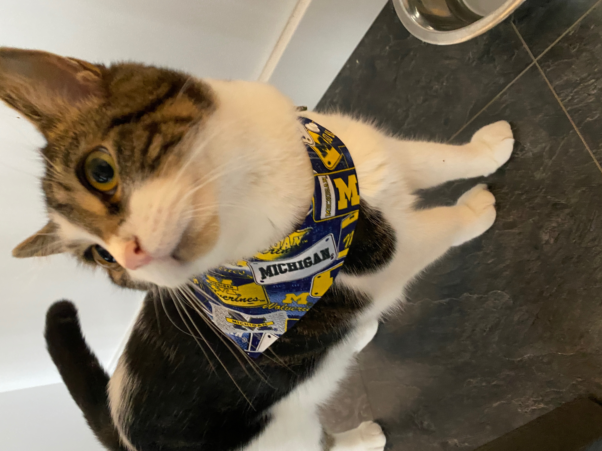

Cinder
- Nick name(s): Baby, Cinder Cat, Cinderella
- Description: Grouchy gray tabby with yellow-green eyes
- Special skills: Chasing paper balls, Stalking Milo
- Hobbies: Watching birds out the window
- Favorite hiding spot(s): Either in the blanket basket or on top of the towels on the towel shelf in the bathroom

Kai
- Nick name(s): Kitty Kai, Moose
- Description: Magestic yet clumsy cream-colored long-haired cat
- Special skills: Stealing his siblings' food, Chasing the red dot from the laser pointer
- Hobbies: Napping
- Favorite hiding spot(s): Behind the clothes hanging in Mom's closet or in the shower

Milo
- Nick name(s): Milo Pepper
- Description: Black and white cat with BIG eyes
- Special skills: He closes the bedroom door and then sticks his paws underneath the crack of the door when wants to play
- Hobbies: Eating
- Favorite hiding spot(s): The cat tree